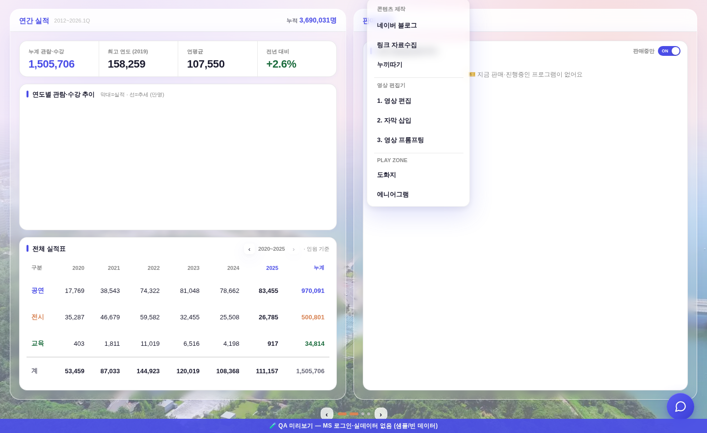
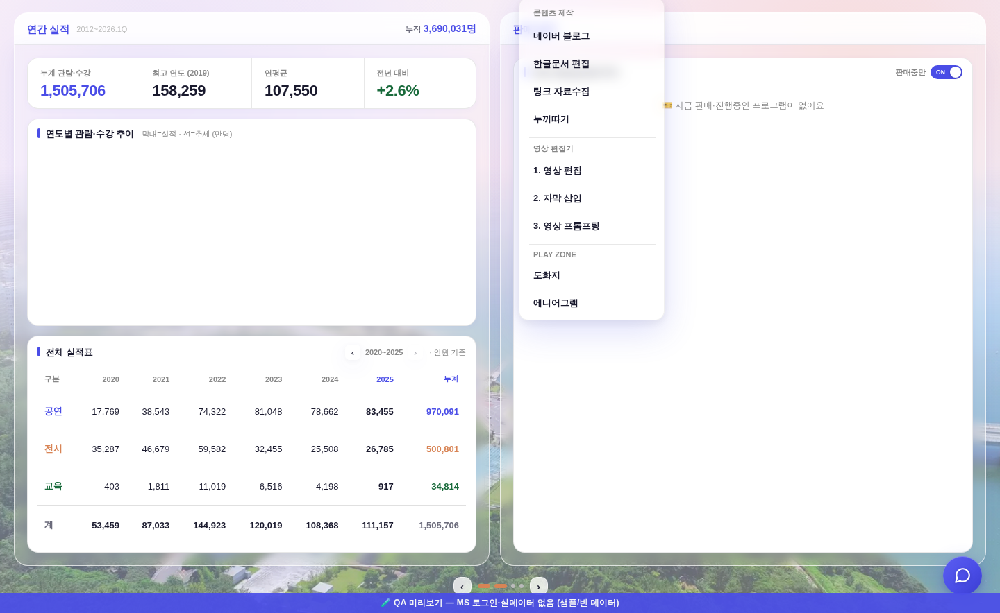
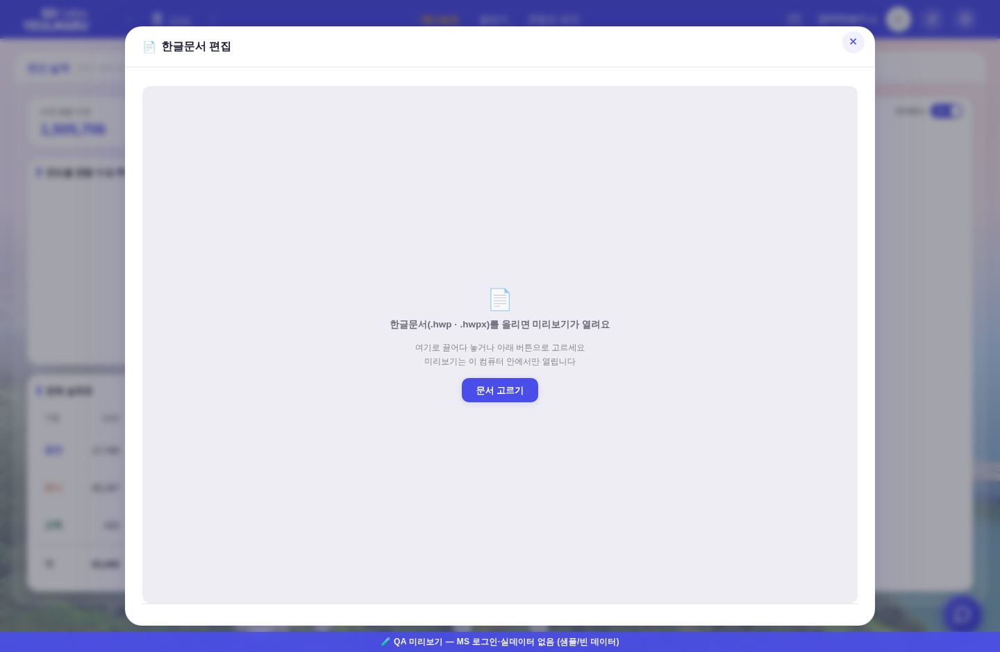
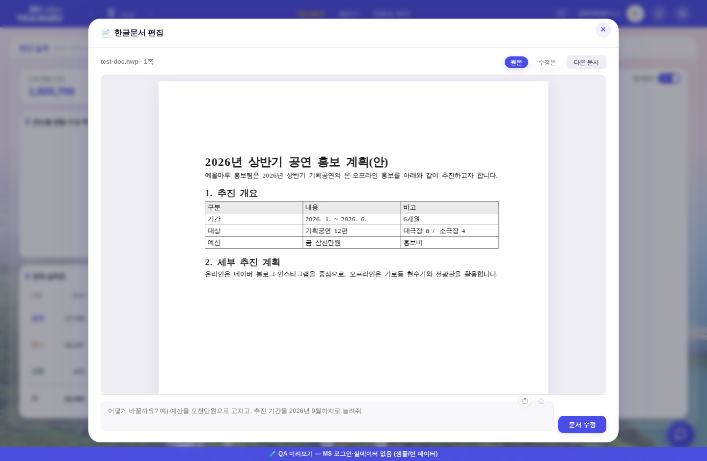
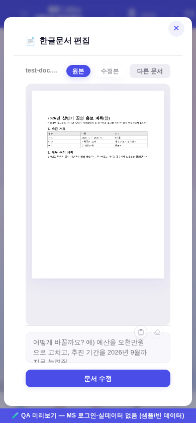

운영자 260803 지시: “콘텐츠 제작에 한글문서 편집 — 문서 올리면 미리보기 띄우고, 원하는 방향 설명하면 변경. 안에 있는 oauth 사용, 수준은 opus 5.0 --effort medium.”
미리보기 렌더러 = claw-hwp(MIT)의 rhwp WASM 이식본 · 편집 엔진 = 같은 저장소의 hwp 스킬을 GitHub Actions에서 claude -p로 구동.


항목 문법(itemCss·호버 알파·구분선)은 기존 _contentMenuBuild 그대로 — 새 색·새 형태 0. 자리 = 네이버 블로그 바로 아래(문서 계열 묶음).

빈 상태 — .u-empty 정본 컴포넌트. 끌어다 놓기 + [문서 고르기].

미리보기 — 실제 페이지 캔버스. 파일명·쪽수 + [원본]/[수정본] 칩 + 아래 지시 입력칸.

모바일 390px — 지시줄이 세로로 접히고 페이지는 폭에 맞춰 축소.
../../../hwp/viewer-core.js)를 그대로 부릅니다 — 파일은 이 브라우저 밖으로 안 나갑니다.| 단계 | 어디서 | 무엇 |
|---|---|---|
| 미리보기 | 브라우저(온디바이스) | hwp/viewer-core.js + hwp/vendor/rhwp/*.wasm — 서버로 안 보냄 |
| 원본 올리기 | Worker /api/hwp/upload | 시크릿 GITHUB_PAT으로 drafts/hwp/<id>.in.<ext> 커밋 |
| 수정 트리거 | Worker /api/hwp/dispatch | repository_dispatch: hwp-edit |
| 수정 실행 | Actions hwp-edit.yml | claw-hwp hwp 스킬 설치 → claude -p --model claude-opus-5 --effort medium(구독 OAuth 5계정 체인) |
| 결과 알림 | /api/blog/draft?id= | 블로그 초안과 같은 폴링 경로 재사용(신설 0) |
| 결과 받기 | Worker /api/hwp/file | drafts/hwp/<id>.out.<ext> 바이트 → 같은 뷰어로 [수정본] 렌더 → 내려받기 |
| 회수 | 워크플로 끝 | 원본 즉시 삭제 · 원본 1시간/수정본 3일 지난 잔재 자동 정리 |
| 항목 | 값 |
|---|---|
| 렌더 | 샘플 A4 1쪽 — 페이지 794×1123px, 비율 1.414(A4 정합) · 잉크 픽셀 30,240 · 무대 안 클리핑 없음 |
| 가로 넘침(1440px) | 없음 (모달 열기 전/후 동일) |
| 가로 넘침(390px) | 문서 기존 헤더 .nav-right 넘침 그대로(전 635px / 후 642px = 로고 에셋 차 6px, 이 기능 기여 0 — 모달이 만든 넘침 요소 0건 실측) |
| JS 에러 | 전·후 동일(서비스워커 등록 경고 1건 = 기존) |
| 디자인 게이트 | check_design 1590/1590(신규 raw hex 0 · :root 무변) · check_refs ✓ · check_wiring ✓ |